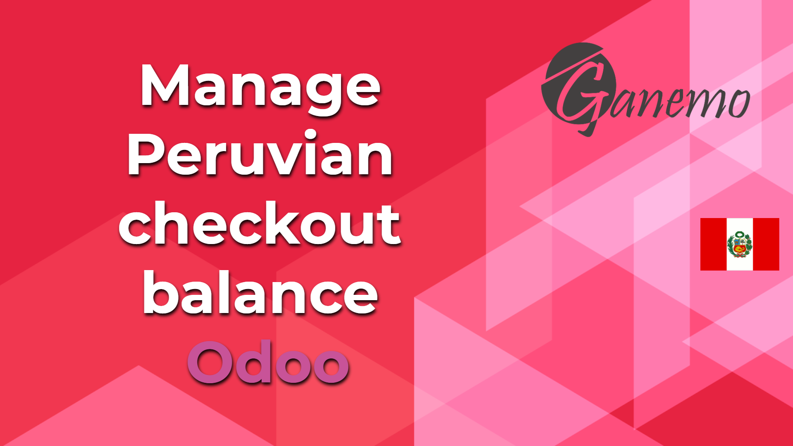

<section class="oe_container oe_dark">
    <div class="oe_row oe_spaced">
        <div class="oe_span8">
            
        </div>
        <div class="oe_span8">
            <span>Creates the trial balance report that includes the income statement by nature and by function.
The presentation of this report is at the accounting account level (two digits) because it uses the groups of accounts to group the information.
It also takes advantage of dynamic Odoo queries. (Only for enterprise) See video:
<a href="https://www.youtube.com/watch?v=FFbXmFLBugs.">https://www.youtube.com/watch?v=FFbXmFLBugs.</a></span>
        </div>
    </div>
</section>